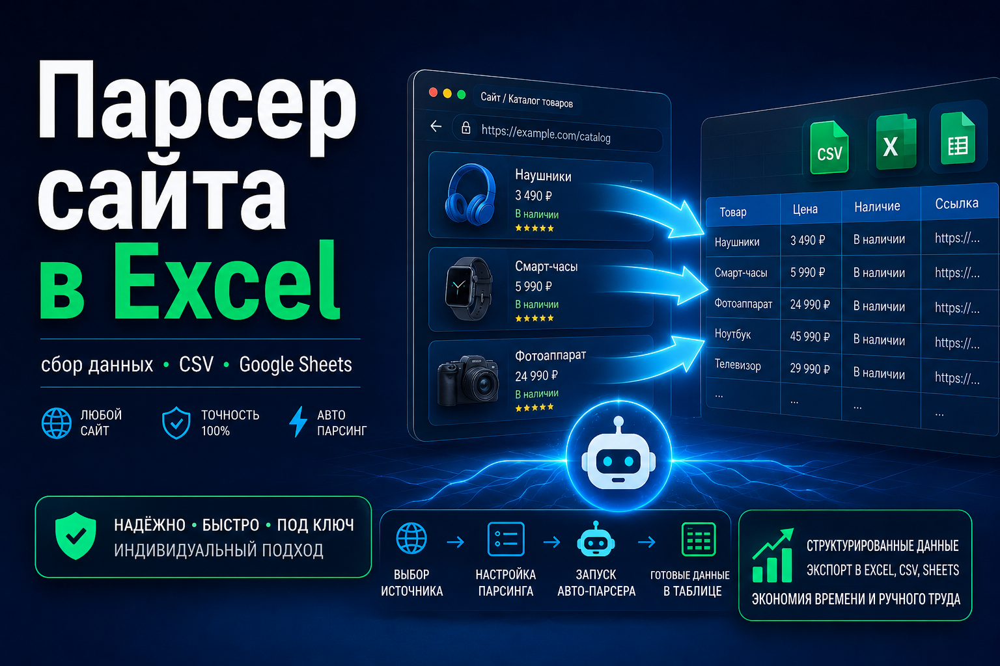

Telegram-бот для заявок
Приём заявок, вопросы клиенту и уведомления администратору.
Делаем Telegram-ботов, сайты, Android-приложения, парсеры, автоматизацию таблиц, CRM-панели и оформление для маркетплейсов.
Мы собираем прикладные решения: без лишней теории, с понятной логикой, рабочим результатом и возможностью быстро запустить проект.
Можно начать с простой версии: бот заявок, сайт-визитка, парсер или приложение из сайта.
Заявки, уведомления, отчёты и сообщения можно отправлять прямо в Telegram.
Не шаблон ради шаблона, а решение под конкретную задачу: продажи, заявки, данные, каталог.
Основные направления Kripke Lab. Каждую услугу можно заказать отдельно или собрать в одну систему.
Заявки, каталоги, магазины, оплаты, рассылки, уведомления, админ-панели.
от 3 000 ₽Лендинги, сайты-визитки, формы заявок, портфолио, доработка готовых сайтов.
от 4 000 ₽WebView-приложения, APK-файл, приложение из сайта, мобильная витрина бизнеса.
от 5 000 ₽Автоматизация таблиц, отчёты, формулы, обработка данных, импорт и выгрузки.
от 2 000 ₽Сбор товаров, цен, контактов, объявлений и другой информации в Excel / CSV.
от 4 000 ₽Карточки WB / Ozon, инфографика, описания, таблицы товаров и отчёты.
от 1 500 ₽Оформление для Avito, Telegram, сайта, карточек услуг и рекламных публикаций.
от 1 500 ₽Исправление ошибок, настройка ботов, сайтов, скриптов, интеграций и кода.
по задачеПримеры работ и направлений, которые показывают, какие задачи можно закрыть одной системой.
Приём заявок, вопросы клиенту и уведомления администратору.

Категории, товары, кнопки, оформление заказа через бота.
Сценарии покупки, проверка оплаты и выдача результата.
Мини-приложение внутри Telegram для каталога или сервиса.
WebView-приложение и APK-файл для сайта или витрины.
Заявки с сайта приходят владельцу прямо в Telegram.

Сбор данных с сайта в таблицу Excel, CSV или Google Sheets.
Мониторинг цен, товаров и изменений на сайтах конкурентов.
Отчёты, графики, автоматизация таблиц и расчётов.

Заявки, клиенты, статусы, статистика и управление данными.
Инфографика, преимущества товара и визуальная упаковка.
Серия изображений для товара, каталога или рекламной витрины.
Демонстрация услуги: сайт можно превратить в Android-приложение. После сборки здесь будет доступен APK-файл для установки.
Сразу видно, что будет на выходе: бот, сайт, таблица, APK или автоматизация.
Начинаем с простой рабочей версии, а не с огромной системы на месяцы.
Помогаем проверить, поправить и объяснить, как пользоваться проектом.
Обсуждение задачи, заявки и уведомления можно вести через Telegram.
Да. Часто лучше сначала сделать MVP: бот заявок, сайт-визитку, простой парсер или WebView-приложение.
Краткое описание задачи, пример похожего решения, список нужных функций и желаемые сроки.
Да. Можно исправить ошибки, добавить функции, настроить бота, сайт, таблицы или скрипты.
Да. Сайт можно использовать как основу, а Android-приложение сделать как мобильную WebView-витрину.
Напишите в Telegram — разберём задачу, предложим вариант решения и назовём стоимость.